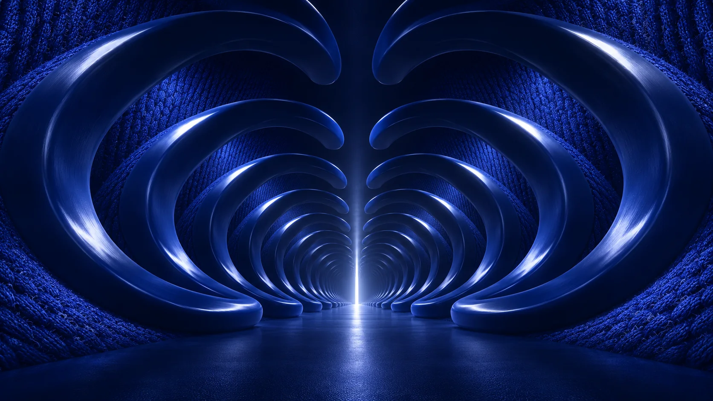
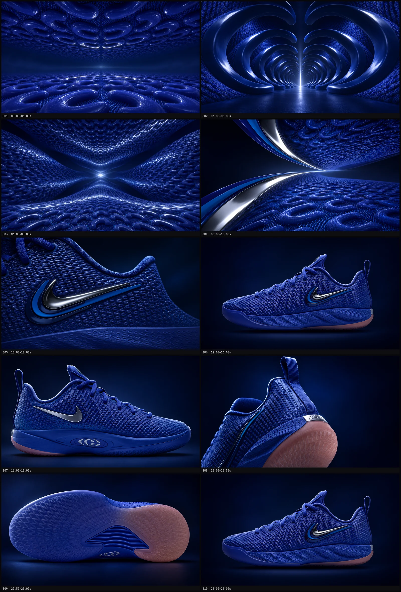
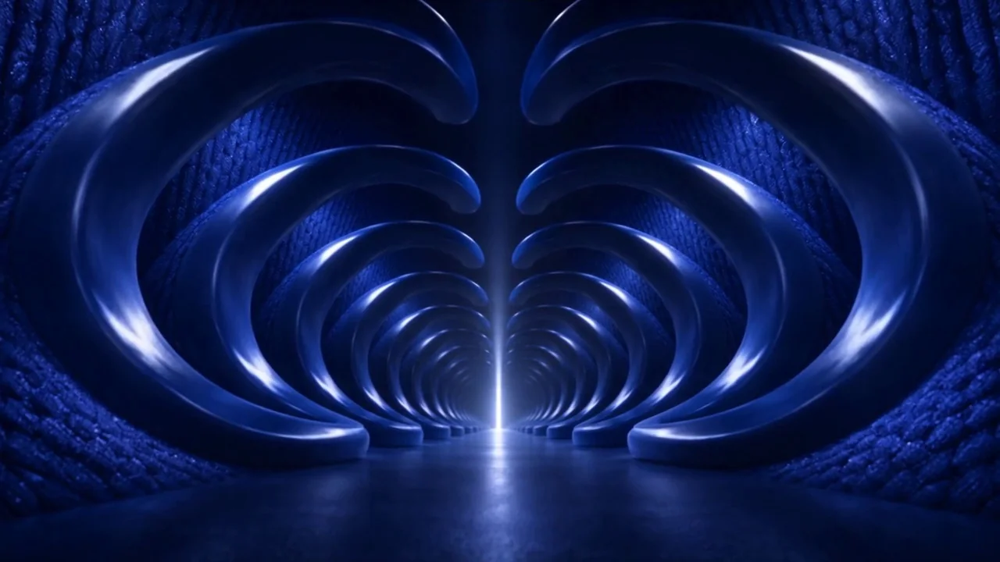
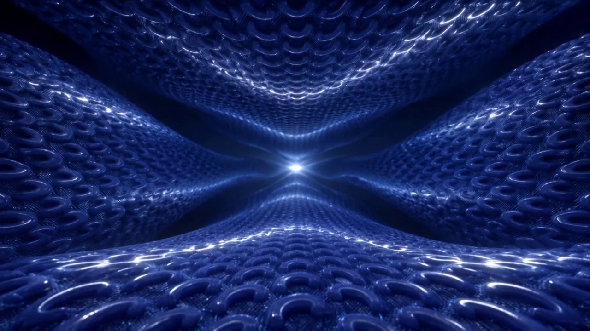
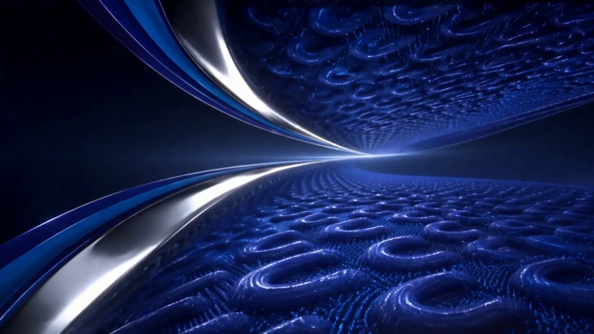
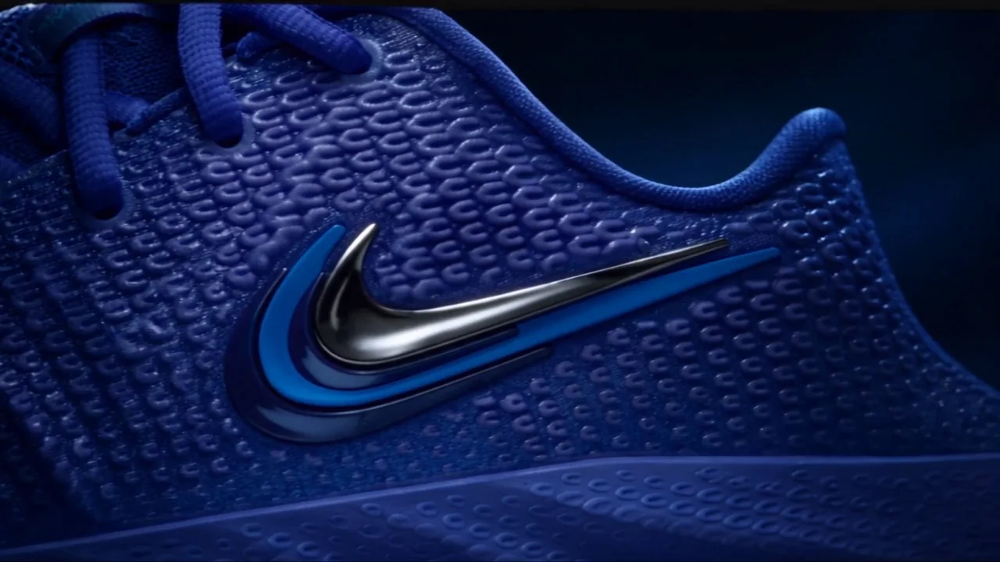
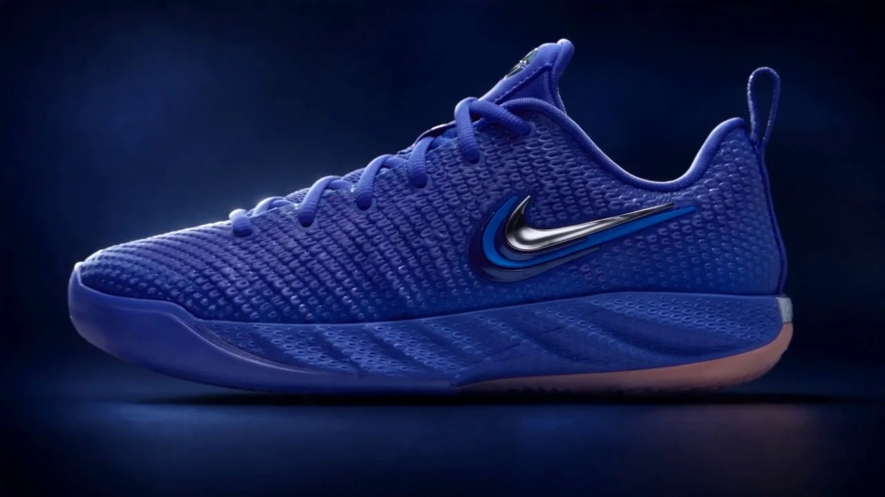
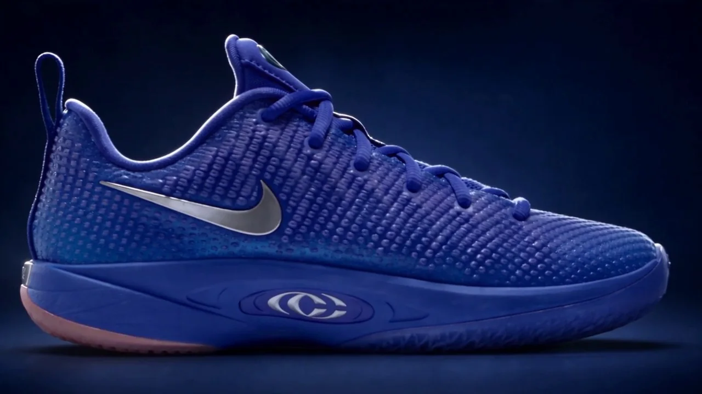
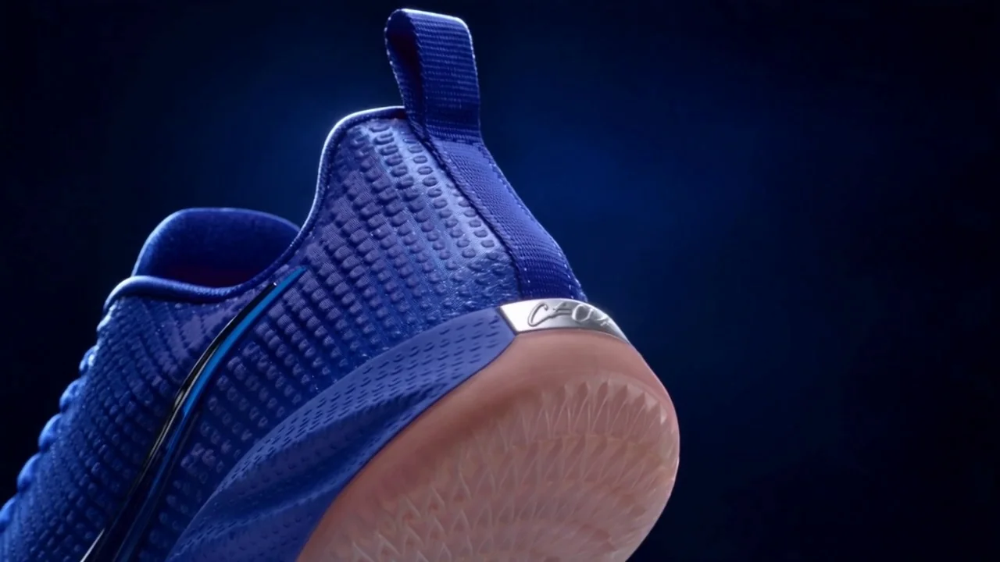
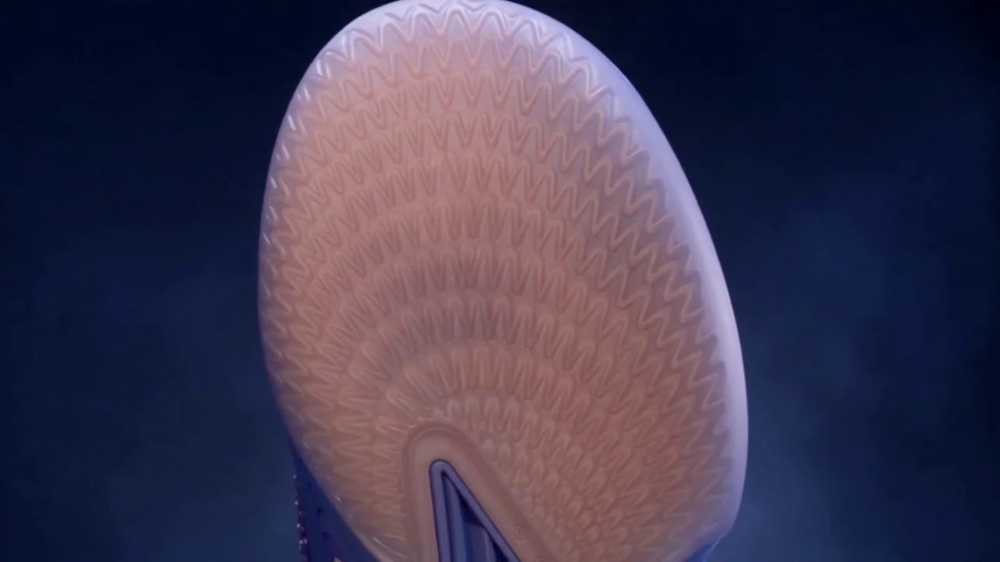

Caitlin / Product motion study
Light Takes Shape
A blue performance shoe emerges from impossible architecture and reflective material in this music-driven motion study.
- Role
- Creative direction + design
- Year
- 2026
- Created by
- Dream City Studio
Material becomes a place to move through.
Reflective surfaces and cobalt architecture give the shoe a world before its details come into view. The film moves from abstract scale into a close study of form, then lets the silhouette resolve through light.
Blue light and chrome carry continuity across the change in scale, connecting the impossible spaces to the product reveal.

From material to movement.
Ten development panels establish the camera language and the shift from abstract worlds to product detail. The selected film resolves that direction into nine sections.

Three movements across nine sections.
The final 25-second edit moves from abstract scale to product detail, then settles into the fully lit hero.
- Abstract worlds
Cobalt architecture and reflective material establish an impossible sense of scale.
- Product details
Macro, lateral, medial, heel and outsole views bring the shoe into focus.
- Silhouette to light
The silhouette becomes a fully lit shoe and holds through the final frame.









Hold the shoe still. Move the camera.
The camera moves through photographed view families while the shoe remains still. Material scale and cobalt continuity connect the abstract opening to the product passage; the ending preserves the generated silhouette-to-light look.
A 25-second conform preserves the approved picture and its generated instrumental, with level normalization for web playback.
Generated shoe details and marks differ from the supplied product photographs, which informed the design.
Read the prompt approach
The selected take prompt describes the abstract material worlds, camera movement, product-view families and silhouette-to-light ending. The final cut retains its observed nine sections rather than matching the ten-shot development board exactly.
Dream City Studio / OpenRouter / Seedance 2.5 · Original supplied photographs informed the design.